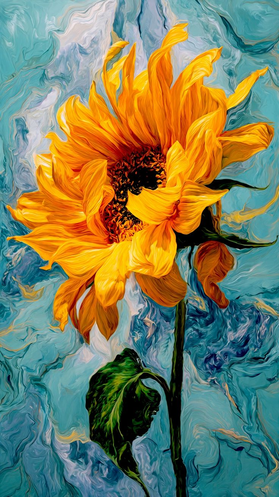
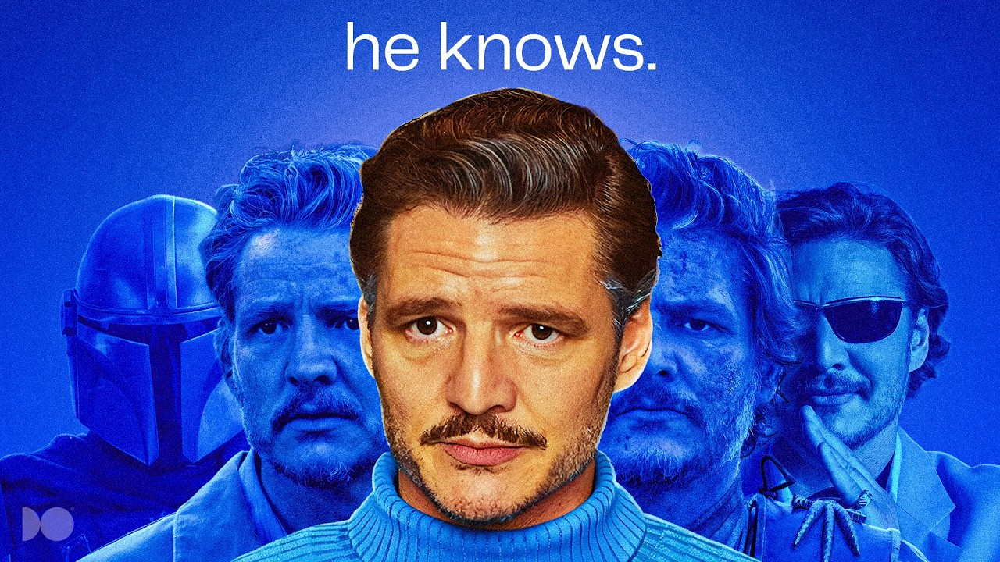
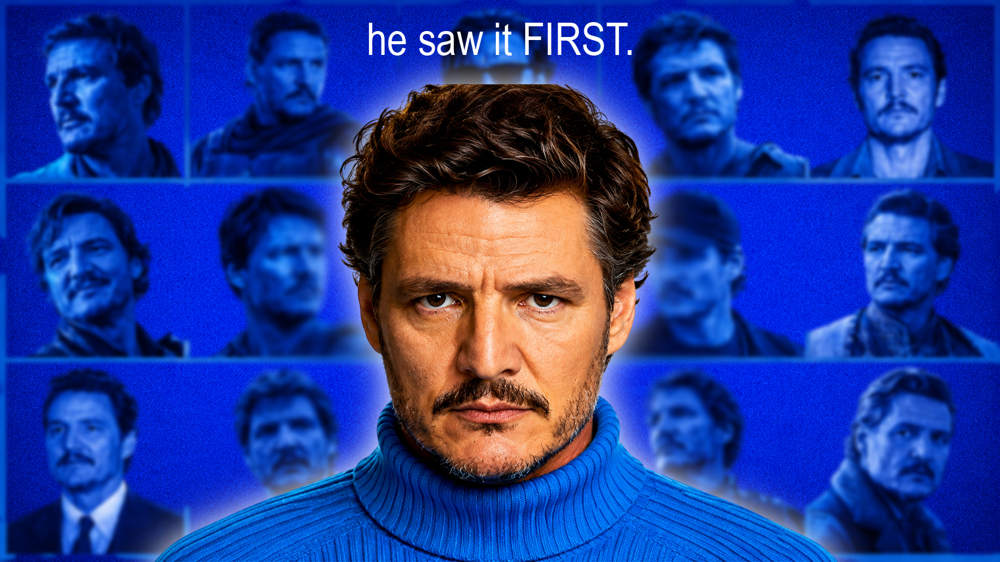
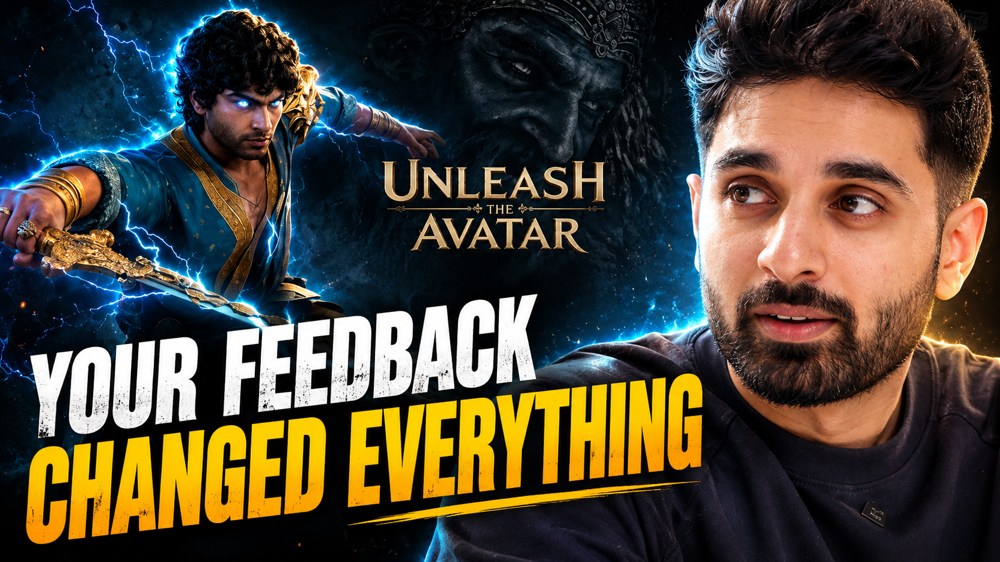

Views generated through high-retention visual packaging & content strategy.
.jpg) MASCOT
MASCOTCRAFT

VISUALSYSTEMS
 TYPE &
TYPE &HIERARCHY
 BRAND
BRANDWORLDS
.jpg) AI + NODE
AI + NODEPIPELINES
.jpg) STORY
STORYFIRST
STRATEGY WITH A LITTLE SPARK · BRAND WORLDS & VISUAL SYSTEMS
Making good ideas feel impossible to ignore*
I connect the dots between people, culture, and brands — then turn those dots into visual systems and campaigns with a clear point of view.
00 / MEASURED IMPACT & OUTCOMES
DESIGN THAT MOVES NUMBERS, NOT JUST PIXELS
Follower growth (+56%) driven by cohesive personal brand identity systems.
Higher scroll-stop & click-through lift via eye-tracking visual hierarchy.
Campaign turnaround using custom node-based AI & design systems.
BRAND IDENTITY*
ADOBE PHOTOSHOP*
FIGMA*
CONVERSION CREATIVE*
COMFYUI & AI WORKFLOWS*
VISUAL HIERARCHY*
ILLUSTRATOR*
CAMPAIGN SYSTEMS*
AI Designer*
Thumbnail Designer*
Graphic Designer*
Creative Strategist*
BRAND IDENTITY*
ADOBE PHOTOSHOP*
FIGMA*
CONVERSION CREATIVE*
COMFYUI & AI WORKFLOWS*
VISUAL HIERARCHY*
ILLUSTRATOR*
CAMPAIGN SYSTEMS*
AI Designer*
Thumbnail Designer*
Graphic Designer*
Creative Strategist*
00 / THE CREATIVE ARC
How raw dots become impossible to ignore.
CLICK ANY NODE OR SCRUB THE TIMELINE →
YOU'RE HERE ↓
ACT I · DISCOVERY
ACT II · STRATEGY & CRAFT
ACT III · LAUNCH
01 / SELECTED PROJECTS
Proof of play.
Five projects. Five different rabbit holes.
One very curious
brain.
MORE EXPERIMENTS IN PROGRESS✳
02 / CLICK VELOCITY & PACKAGING
Thumbnails built to stop the scroll.
01 / 08

01THUMBNAIL PACKAGING

02CURIOSITY GAP

03VISUAL HIERARCHY

04CREATOR IDENTITY

05FOCAL CONTRAST

06SPLIT-FRAME HOOK
07DEPTH & LIGHTING

08SCROLL STOPPER

INSIDE THE BOX
03 / UNBOXING THE METHOD
How I unpack a creative challenge.
Great results don't just happen. This is the hand-retouched, data-driven workflow I apply to every brand and pixel—built to move metrics and capture eyeballs.
01
dig for the tension
I examine the category and its audience. I identify where others are safe or boring to pinpoint the visual white space.
02
visual first-principles
I build the structural visual system. Establishing typographic scale, palette anchors, and distinct subject hierarchy to ensure everything reads instantly on screen.
03
retouch & reinforce
No generic outputs. I blend AI prototyping (ComfyUI) with Photoshop hand-crafting to produce sharp, original assets that convert.
04
test & iterate
I view performance stats as creative guidance. Examining click-through rates, views, and app placement behavior to iterate on the visuals.
02 / THE PERSON BEHIND THE PIXELS
Part strategist.
Part storyteller.
Always
curious.
Hello, I'm Ishwari Kokane — a creative thinker who likes asking better questions before jumping to shiny answers.
I work across brand strategy, creative direction and campaign thinking. My favourite work lives where a sharp insight meets an unexpected idea, and where a brand sounds and feels unmistakably like itself.
Get to know me ↗nice
to meet
you☺
to meet
you☺
A SMALL CREATIVE BELIEF
“The best ideas don't just look different.
They make
you see something differently.”
STUFF TO KNOW.
Hiring full-time or kicking off a brand sprint? No gatekeeping—here is what working together actually looks like.
Hire Me · Let's Talk ↗What kind of roles or projects are you open to? +
Full-time graphic & brand design roles (remote or hybrid in Pune/Bangalore) as well as select freelance brand identity, campaign systems, and AI-assisted visual direction sprints.
What do I actually get when we work together? +
Never just a pretty static mockup. You get the strategic "why," a cohesive visual system (typography, color, layout rules), and production-ready assets built to scale across social, web, and print.
How do you use AI in your creative workflow? +
As a precision production tool—not a shortcut for thinking. I build reproducible node-based pipelines (ComfyUI / InvokeAI) alongside Photoshop and Figma to keep lighting, product fidelity, and brand identity 100% consistent.
How fast can we kick something off? +
Usually within 48 hours. Send over the brief, deck, or half-baked idea—and we will map out the sharpest angle before touching a single artboard.